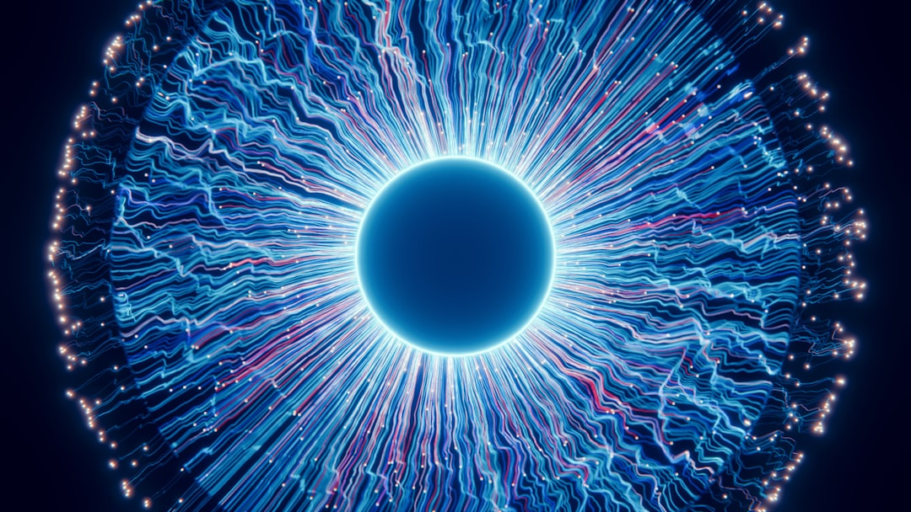

### Cosmic Ray Precognition: The Science and the Struggle Against Corporate Obfuscation
### Cosmic Ray Precognition: The Science and the Struggle Against Corporate Obfuscation In a world rife with misinformation and corporate spin, it’s no surprise that groundbreaking scientific concepts often get buried. One such phenomenon is the compelling theory of cosmic ray precognition—a concept that brushes against the edges of science and challenges conventional wisdom entrenched by capitalist ideologies. This isn't just another obscure theory; it's a striking reminder of how interconnected our existence really is, a concept soundly ignored by the self-serving elite who profit from our ignorance. #### What Are Cosmic Rays? First, let’s break down what cosmic rays are. These high-energy particles, primarily protons, fling across the universe at nearly the speed of light, originating from supernovae, black holes, and other cosmic violence. The Earth's atmosphere protects us (for now, at least) from their harshest impacts, but researchers propose an audacious idea: these cosmic forces might interact with human consciousness in ways we have yet to fully comprehend. Is the universe, in its vastness, capable of communicating with us? The theory posits that cosmic rays could carry information that interacts with our brain's electrical activity, potentially allowing for glimpses into future probabilities. In other words, could cosmic rays possess the capability of providing some kind of precognitive insight? It sounds outrageous, doesn’t it? Yet, across various labs and studies, researchers are exploring exactly this. #### Science or Sorcery? Cosmic ray precognition challenges not just our understanding of physics but also confronts the dogmas entrenched in our capitalist society. The idea of tapping into cosmic knowledge isn't just theoretical; it’s a call to re-evaluate what we perceive as reality. The capitalist machine thrives on control and manipulation of information, clamoring for predictability and profit margins. In contrast, this exploration invites chaos, intuition, and the mystical unknown back into the conversation. Government and corporate interests often mute scientific inquiries that do not fit neatly into their profit-driven narratives. Why would they want to encourage public discussions about phenomena that could fundamentally alter our understanding of freedom, destiny, or even economic structures? A society that questions the very nature of reality, and perhaps even its own future, poses a threat to the established order. The mainstream scientific community often scoffs at such freewheeling ideas, but let’s not forget: every great scientific breakthrough was once dismissed as pseudoscience by those playing it safe, those with one foot in established orthodoxy. It’s time to rethink our stance, to dismantle oppressive paradigms that keep us shackled to a narrow understanding of our existence. #### The Role of Technology and Capitalism One cannot speak of cosmic rays without acknowledging the role technology plays in our quest for understanding them. The very physicists who study cosmic rays are frequently under the thumb of funding from corporate interests that see dividends before discoveries. Often, our most spectacular breakthroughs come from prophecies of profit, not pure investigation. This interplay of technology and capital renders it nearly impossible for those without financial backing to contribute to the discourse. Not every brilliant mind can get a seat at the table of scientific debate. How many promising theories have been strangled in their infancy due to lack of funding or institutional support, simply because they didn’t align with profit motives? The irony here is rich; cosmic rays, sent from afar in a spectacular cosmic dance, hold keys to understanding deeper dimensions of consciousness while our corporatized systems stifle exploration and truth. While the capitalist class remains entrenched in preserving a status quo that ignores the mystical connections between humanity and the universe—choices governed by profit over well-being—scientific inquiry lies dormant. #### Connecting the Dots So, what does all this mean for you, the everyday person who is invested in a better future, one that might explore these cosmic connections? It’s simple: become an advocate for multidisciplinary dialogue that bridges the gap between science, spirituality, and consciousness. Push back against socio-political structures that refuse to acknowledge the potential larger forces at play. Education, accessible science, and community engagement can shine a light on the obscured. The concept of cosmic ray precognition urges us to ask bold questions: If the universe has a means of communicating with us via cosmic phenomena, what else might we be missing? How deeply interconnected are we to the cosmos? And more importantly, how can we mobilize this
Updated 2025-08-04 23:52 UTC